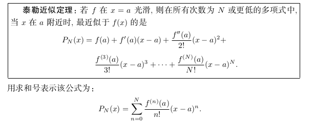
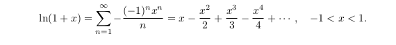

本文是微积分复习的第三篇，教材使用《普林斯顿微积分读本》，涵盖第22章-第26章的内容。
- 函数与微分
- 积分
- 级数 <=
- 其他
级数的进入是从数列开始的，首先是数列的收敛性，然后是级数的收敛性，然后过度到泰勒级数，最后是对泰勒级数的应用（估值问题）。
级数是积分概念在离散数列的延伸，正向理解，是对离散数据的求和，反向理解，是对函数的分解。就分解而言，在工程领域得到了充分的应用。
级数的收敛性
数列收敛性
谈到收敛性，就离不开极限，而数列从函数那里继承了很多极限的性质：
- 数列继承了函数的极限性质
- 三明治定理
- 连续函数保持极限，lim g(x) -> L 则lim f(g(x)) -> f(L)
级数收敛性简介
级数就是和，就是将数列an的所有项都加起来;
级数对等的是积分，无穷级数的收敛性对等反常积分对无限的积分，这样对反常积分收敛性的4种判别方法，就可以应用到级数上，另外级数也有几种独有的级数。
反常积分的方法
第n项判别法
注意：第n项判别法不能用于级数收敛性的判别，即lim an = 0未必收敛。极限比较判别法
p判别法
绝对收敛判别法
特有的方法
以上是从反常积分继承来的判别法，以下是级数特有的判别法，包括：比式判别法、根式判别法、积分判别法和交错级数判别法
比式判别法与根式判别法不之间判断源数列，而是构建一个新的数列，通过判断新数列的收敛性来判断级数的收敛性
比式判别法
构建一个新的数列bn，定义其为数列相邻两项之的绝对值, 若bn收敛于一个小于1的数，则原级数收敛;大于1的数，则原级数发散;等于1，则不应该用比式判别法。
根式判别法
根式判别式构建的新数列为第n项绝对值的n次方根，若bn收敛于一个小于1的数，则原级数收敛;大于1的数，则原级数发散;等于1，则不应该用根式判别法。

积分判别法
若函数的f(x)的积分收敛，则对应级数也收敛
交错级数判别法
若级数是交错的，且各项的绝对值递减趋于0,则级数收敛
这里引出一个条件收敛的概念，若一个级数收敛二其绝对值发散，就称为条件收敛
示例：
使用总结
特有方法的使用优先级高于继承方法的优先级
泰勒级数与幂级数
泰勒定理

若想证明一个函数在某些x处等于它的泰勒级数，需要证明当N → ∞ 时 RN(x) → 0.
对所有x都成立。
幂级数与泰勒级数
幂级数是以a0+a1x + a2x2 + a3x3 + a4x4 + …
也可以写成![幂级数一般形式.png])
在x=a处的幂级数：
从这个形式处，可以看出泰勒级数是一种特殊的幂级数:
这里有一个麦克劳林级数，它是泰勒级数的在x=0处的特例：
求解估值问题
示例1
用二阶泰勒多项式估算e1/3，并估算误差
| n | f(n)(x) | f(n)(0) |
|---|---|---|
| 0 | ex | 1 |
| 1 | ex | 1 |
| 2 | ex | 1 |
| 3 | ex | 1 |
示例2
估算sqart(27)，误差不大于1/250

求得N = 1即可。P1(27) = 5 + 1/10 *(27-25) = 26/5
示例3
用三阶泰勒级数估算 cos(π/3 − 0.01) 的值 ,
求得N=3
其他问题
幂级数收敛半径与收敛区间
幂级数的收敛性判断，大多数时间使用比值判别法，有时可以使用根式判别法。
当|x|< 1 时绝对收敛，当|x| > 1时绝对发散。
再考虑 x = 1 与 x = -1情况：
当x = 1 时它发散
当x = -1时 条件收敛
利用现有泰勒级数求其他泰勒级数
可以通过换元、求导、求积分的方式求其他级数
换元


求导
求积分
利用麦克劳林求极限
利用麦克劳林级数求极限时，将所有的函数，换算成多项式，然后进行合并求解即可